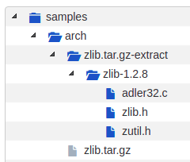

All Available Options¶
This section contains an exhaustive list of all Scancode options, arranged in various sections. The sections are as follows:
Basic Scan Options
Core Scan Options
Output Formats
Controlling Output and Filters
Pre-Scan Options
Post-Scan Options
There’s also another section for extractcode options.
The order of the sections and all their options is the same as in the :ref:’cli_help_text’, available in the command line.
Note
Please note that different for different install methods, scan commands vary.
The basic command to perform a scan, in case of a download and configure installation (on Linux/MacOS) is:
path/to/scancode [OPTIONS] <OUTPUT FORMAT OPTION(s)> <SCAN INPUT>
The basic usage, if Scancode is installed from pip, or in Windows:
scancode [OPTIONS] <OUTPUT FORMAT OPTION(s)> <SCAN INPUT>
For more information on how the Scan Command varies for Various Installation Methods/Operating Systems, refer Commands Variation.
All “Basic” Scan Options¶
Option lists are two-column lists of command-line options and descriptions, documenting a program’s options. For example:
- -c, --copyright
Scan
<input>for copyrights.Sub-Options:
--consolidate
- -l, --license
Scan
<input>for licenses.Sub-Options:
--consolidate--license-score INT--license-text--license-url-template TEXT--license-text-diagnostics--is-license-text
- -p, --package
Scan
<input>for packages.Sub-Options:
--consolidate
- -e, --email
Scan
<input>for emails.Sub-Options:
--max-email INT
- -u, --url
Scan
<input>for urls.Sub-Options:
--max-url INT
- -i, --info
Include information such as:
Size,
Type,
Date,
Programming language,
sha1 and md5 hashes,
binary/text/archive/media/source/script flags
Additional options through more CLI options
Sub-Options:
--mark-source
Note
Unlike previous 2.x versions, -c, -l, and -p are not default. If any of combination of these
options are used, ScanCode only performs that specific task, and not the others.
scancode -e only scans for emails, and doesn’t scan for copyright/license/packages/general
information.
Note
These options, i.e. -c, -l, -p, -e, -u, and -i can be used together. As in, instead of
scancode -c -i -p, you can write scancode -cip and it will be the same.
- --generated
Classify automatically generated code files with a flag.
- --max-email INT
Report only up to INT emails found in a file. Use 0 for no limit. [Default: 50]
Sub-Option of -
--email- --max-url INT
Report only up to INT urls found in a file. Use 0 for no limit. [Default: 50]
Sub-Option of -
--url- --license-score INTEGER
Do not return license matches with scores lower than this score. A number between 0 and 100. [Default: 0] Here, a bigger number means a better match, i.e. Setting a higher license score translates to a higher threshold (with equal or less number of matches).
Sub-Option of -
--license- --license-text
Include the matched text for the detected licenses in the output report.
Sub-Option of -
--licenseSub-Options:
--license-text-diagnostics--is-license-text
- --license-url-template TEXT
Set the template URL used for the license reference URLs.
In a template URL, curly braces ({}) are replaced by the license key. [Default: https://enterprise.dejacode.com/urn/urn:dje:license:{}]
Sub-Option of -
--license- --license-text-diagnostics
In the matched license text, include diagnostic highlights surrounding with square brackets [] words that are not matched.
Sub-Option of -
--licenseand--license-text
All Extractcode Options¶
This is intended to be used as an input preparation step, before running the scan. Archives found in an extracted archive are extracted recursively by default. Extraction is done in-place in a directory named ‘-extract’ side-by-side with an archive.
To extract the packages in the samples directory
extractcode samples
This extracts the zlib.tar.gz package:
- --shallow
Do not extract recursively nested archives (e.g. Not archives in archives).
- --verbose
Print verbose file-by-file progress messages.
- --quiet
Do not print any summary or progress message.
- -h, --help
Show the extractcode help message and exit.
- --about
Show information about ScanCode and licensing and exit.
- --version
Show the version and exit.
All “Core” Scan Options¶
- -n, --processes INTEGER
Scan
<input>using n parallel processes. [Default: 1]- --verbose
Print verbose file-by-file progress messages.
- --quiet
Do not print summary or progress messages.
- --timeout FLOAT
Stop scanning a file if scanning takes longer than a timeout in seconds. [Default: 120]
- --reindex-licenses
Force a check and possible reindexing of the cached license index.
- --from-json
Load codebase from an existing JSON scan
- --max-in-memory INTEGER
Maximum number of files and directories scan details kept in memory during a scan. Additional files and directories scan details above this number are cached on-disk rather than in memory. Use 0 to use unlimited memory and disable on-disk caching. Use -1 to use only on-disk caching. [Default: 10000]
- --max-depth INTEGER
Descend at most INTEGER levels of directories including and below the starting point. INTEGER must be positive or zero for no limit. [Default: 0]
Note
All the Core Options are independent options, i.e. They don’t depend on other options.
All Scan Output Options¶
- --json FILE
Write scan output as compact JSON to FILE.
- --json-pp FILE
Write scan output as pretty-printed JSON to FILE.
- --json-lines FILE
Write scan output as JSON Lines to FILE.
- --csv FILE
Write scan output as CSV to FILE.
- --html FILE
Write scan output as HTML to FILE.
- --custom-output
Write scan output to FILE formatted with the custom Jinja template file.
Mandatory Sub-option:
--custom-template FILE
- --custom-template FILE
Use this Jinja template FILE as a custom template.
Sub-Option of:
--custom-output- --spdx-rdf FILE
Write scan output as SPDX RDF to FILE.
- --spdx-tv FILE
Write scan output as SPDX Tag/Value to FILE.
- --html-app FILE
Write scan output as a mini HTML application to FILE.
Warning
The html-app feature has been deprecated and you should use Scancode Workbench instead to visualize scan results. The official Repository link. Also refer How to Visualize Scan results.
All “Output Control” Scan Options¶
- --strip-root
Strip the root directory segment of all paths.
- --full-root
Report full, absolute paths.
Note
The options --strip-root and --full-root can’t be used together, i.e. Any one option
may be used in a single scan.
Note
The default is to always include the last directory segment of the scanned path such that all paths have a common root directory.
- --ignore-author <pattern>
Ignore a file (and all its findings) if an author contains a match to the
<pattern>regular expression.- --ignore-copyright-holder <pattern>
Ignore a file (and all its findings) if a copyright holder contains a match to the
<pattern>regular expression.
Note
Note that this both the options --ignore-author and --ignore-copyright-holder will
ignore a file even if it has other scanned data such as a license or errors.
- --only-findings
Only return files or directories with findings for the requested scans. Files and directories without findings are omitted (file information is not treated as findings).
All “Pre-Scan” Options¶
- --ignore <pattern>
Ignore files matching
<pattern>.- --include <pattern>
Include files matching
<pattern>.- --classify
Classify files with flags telling if the file is a legal, or readme or test file, etc.
Sub-Options:
--license-clarity-score--summary-key-files
- --facet <facet_pattern>
Here
<facet_pattern>represents<facet>=<pattern>. Add the<facet>to files with a path matching<pattern>.Sub-Options:
--summary-by-facet
All “Post-Scan” Options¶
- --mark-source
Set the “is_source” flag to true for directories that contain over 90% of source files as direct children and descendants. Count the number of source files in a directory as a new “source_file_counts” attribute
Sub-Option of -
--url- --consolidate
Group resources by Packages or license and copyright holder and return those groupings as a list of consolidated packages and a list of consolidated components.
Sub-Option of -
--copyright,--licenseand--packages.- --filter-clues
Filter redundant duplicated clues already contained in detected licenses, copyright texts and notices.
- --is-license-text
Set the “is_license_text” flag to true for files that contain mostly license texts and notices (e.g. over 90% of the content).
Sub-Option of -
--infoand--license-text.
Warning
--is-license-text is an experimental Option.
- --license-clarity-score
Compute a summary license clarity score at the codebase level.
Sub-Option of -
--classify.- --license-policy FILE
Load a License Policy file and apply it to the scan at the Resource level.
- --summary
Summarize license, copyright and other scans at the codebase level.
Sub-Options:
--summary-by-facet--summary-key-files--summary-with-details
- --summary-by-facet
Summarize license, copyright and other scans and group the results by facet.
Sub-Option of -
--summaryand--facet.- --summary-key-files
Summarize license, copyright and other scans for key, top-level files. Key files are top- level codebase files such as COPYING, README and package manifests as reported by the
--classifyoption “is_legal”, “is_readme”, “is_manifest” and “is_top_level” flags.Sub-Option of -
--classifyand--summary.- --summary-with-details
Summarize license, copyright and other scans at the codebase level, keeping intermediate details at the file and directory level.